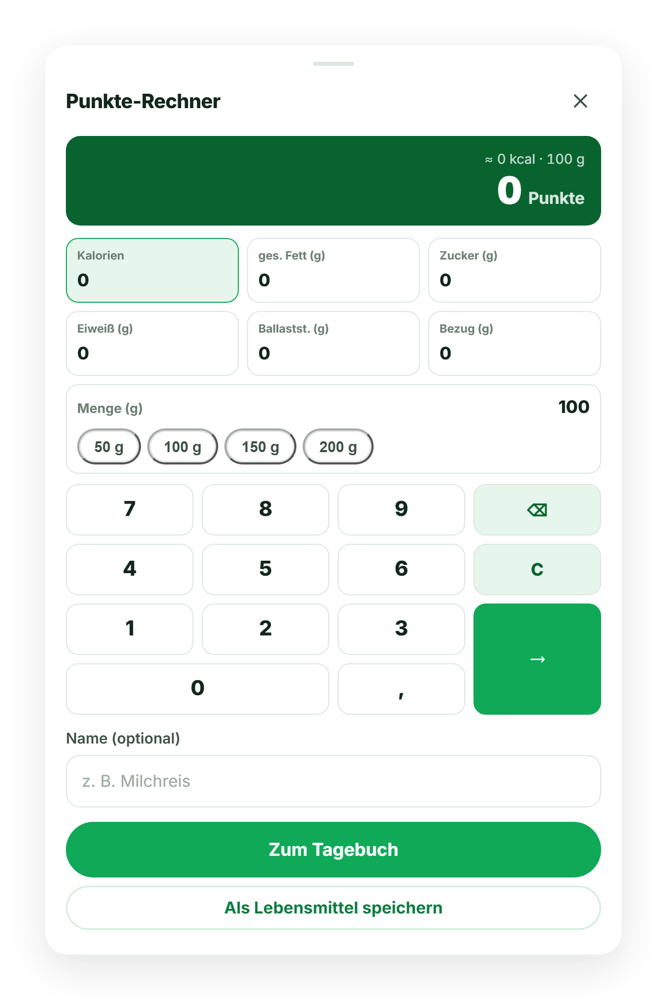

🥣
Haferflocken mit Beeren
Frühstück
Jedes Lebensmittel hat einen einfachen Punktwert. Du bekommst ein Tagesbudget — und isst, was du magst, solange es passt. Kein Kalorienzählen, keine Verbote.
Kein kompliziertes Zählen. Ein Wert pro Lebensmittel — der Rest ergibt sich.
Kurzes Kennenlernen: Größe, Gewicht, Wunschgewicht, Alltag. Punkto berechnet daraus dein persönliches Tagesbudget und ein Wochenextra für besondere Tage.
Lebensmittel suchen, Barcode scannen oder eigene anlegen. Jeder Eintrag zeigt sofort seine Punkte. Obst, Gemüse & viele eiweißreiche Lebensmittel zählen 0 Punkte.
Dein Ring zeigt, was heute noch übrig ist. Die geglättete Gewichtskurve zeigt deinen Trend — Tag für Tag, ganz ohne Druck.
Ein Tippen auf Hinzufügen — und du wählst aus neun Wegen: suchen, Barcode scannen, mit 0 Punkten satt essen, einen Tag kopieren, wiegen, Aktivität eintragen, ein Produkt per Foto anlegen, den Punkte-Rechner oder den Rezept-Modus nutzen.

Von der Foto-Erfassung bis zum Gewichts-Trend — mit über 300.000 Produkten in der Datenbank begleitet dich Punkto den ganzen Tag.
Ein einziger, verständlicher Wert. Kein Umrechnen, kein schlechtes Gewissen — du siehst auf einen Blick, wie dein Tag läuft.
Produkt scannen — Punkto erkennt es über Open Food Facts und füllt Name, Marke und alle Nährwerte automatisch aus. Ein Tipp, fertige Punkte.
Riesige Datenbank aus Open Food Facts und dem amtlichen Bundeslebensmittelschlüssel (BLS) — dazu geprüfte Einträge aus unserer eigenen Datenbank.
Kein Eintrag gefunden? Fotografiere Produkt, Nährwerttabelle und Barcode — die Texterkennung liest die Werte aus und legt dein Produkt an. Auch offline.
Mehrere Zutaten addieren, durch Portionen teilen — du bekommst die Punkte pro Portion. Einmal anlegen, immer wieder mit einem Tipp buchen.
Lieblingsgerichte einmal anlegen. Zuletzt gegessen und ★ Favoriten holst du mit einem einzigen Tipp zurück ins Tagebuch.
Trag dein Gewicht ein, wann du magst. Die geglättete Kurve zeigt den Trend — nicht die tägliche Schwankung.
Übernimm die Schritte aus deiner Health-App oder trag ein Workout ein — Bewegung bringt kleine Bonuspunkte, dein Budget wächst mit.
Punkto legst du dir aufs Handy — ohne App-Store, direkt vom Startbildschirm. Deine Einträge funktionieren auch offline und werden zusätzlich sicher auf dem Server gespeichert — so hast du auf jedem Gerät denselben Stand.
Punkto setzt auf kleine, machbare Schritte — kein Verzicht, keine Verbote.
Über 40 Obst-, Gemüse- und Eiweißsorten kannst du ohne Anrechnung essen. Sattwerden ist erlaubt.
Ein extra Punktepolster für die ganze Woche. Für Geburtstag, Restaurant oder einfach Lust auf mehr.
In Deutschland gehostet, kein Datenverkauf, kein Tracking-Zirkus. Deine Einträge bleiben auf deinem Gerät und werden zusätzlich sicher auf dem Server gespeichert — geht ein Handy verloren, sind deine Daten trotzdem da. Und du kannst jederzeit alles löschen.
Starte 14 Tage kostenlos. Danach ein fairer Preis — monatlich oder günstiger im Jahresabo, ohne versteckte Kosten.
Monatlich oder jährlich per Verlängerung — kein automatisches Abbuchen, keine Kündigungsfrist. Läuft einfach aus, wenn du nicht verlängerst.
Nein. Punkto ist eine eigenständige App mit einem selbst entwickelten Punktesystem und eigenem Design. Wir stehen in keiner Verbindung zu WW International und verwenden keine deren Marken oder Formeln.
Punkto errechnet aus den Nährwerten einer Portion einen ganzzahligen Wert: Kalorien bilden die Grundlast, gesättigte Fette und Zucker erhöhen den Wert, Eiweiß und Ballaststoffe senken ihn. Das belohnt sättigende, nährstoffreiche Lebensmittel — ganz ohne dass du selbst rechnen musst.
Nein. Die 14 Tage sind ohne Zahlungsdaten. Möchtest du danach weitermachen, zahlst du per Überweisung (mit QR-Code) oder PayPal, und wir schalten deinen Zugang frei. Es wird nie automatisch etwas abgebucht.
Gar nicht nötig — dein Zugang ist zeitlich begrenzt und läuft automatisch aus, wenn du nicht verlängerst. Du gehst also kein laufendes Abo ein.
Ja. Punkto ist eine installierbare Web-App (PWA). Du kannst sie auf dem Startbildschirm ablegen und offline nutzen — ohne App-Store.
Ja. Dein Tagebuch, dein Gewicht und deine Aktivität liegen auf deinem Gerät und werden zusätzlich sicher auf dem Server in Deutschland gespeichert. Meldest du dich auf einem neuen Gerät an, sind deine Einträge wieder da — auch wenn das alte Handy weg ist.
Nein. Punkto ist ein Alltags-Werkzeug zur Orientierung und kein Medizinprodukt. Bei Erkrankungen, in Schwangerschaft/Stillzeit oder bei Essstörungen sprich bitte mit Ärztin, Arzt oder einer Ernährungsfachkraft.
Leg in zwei Minuten los. Die ersten 14 Tage gehen aufs Haus.
Jetzt kostenlos starten